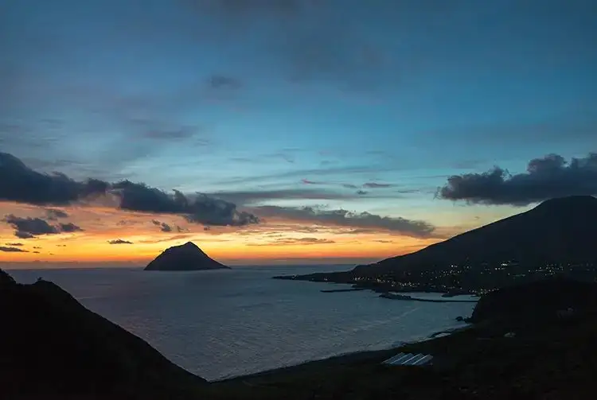
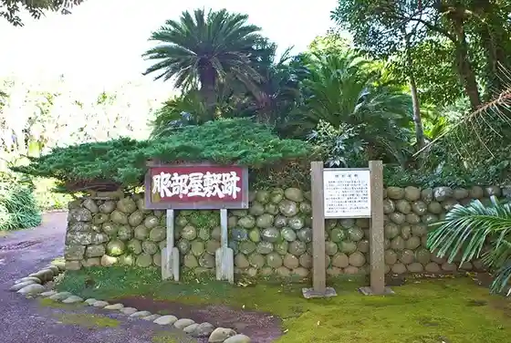
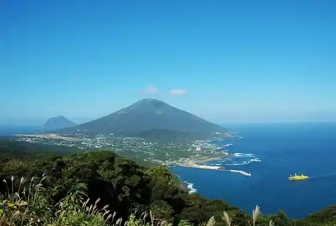
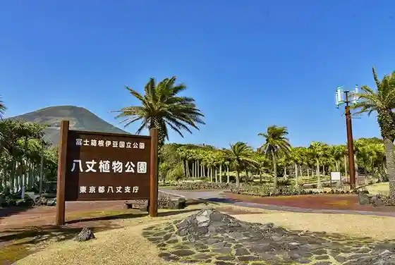
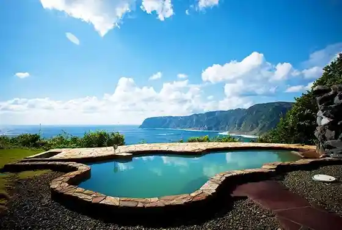

Hachijo
Hachijo · Tokyo
Hachijo
Highlighted on the Tokyo map.

Sights
Osaka Tonneru Lookout
Hattori Residence (Hachijo Shima)

Toryu Toge Viewpoint

Hachijo Shokubutsu Park

Suekichi Onsen Miharashi Baths

Hachijo Fuji
Nako no Lookout
Camp Office Ato (Osato Gyokuseki Kaki)
Nambara Senjo Iwa Coast
Ashiyu Kirameki
Kashi Ritsu Ko Sato Onsen (Fureai Baths)
Naka Yuki Sato Onsen (Yasuragi Baths)